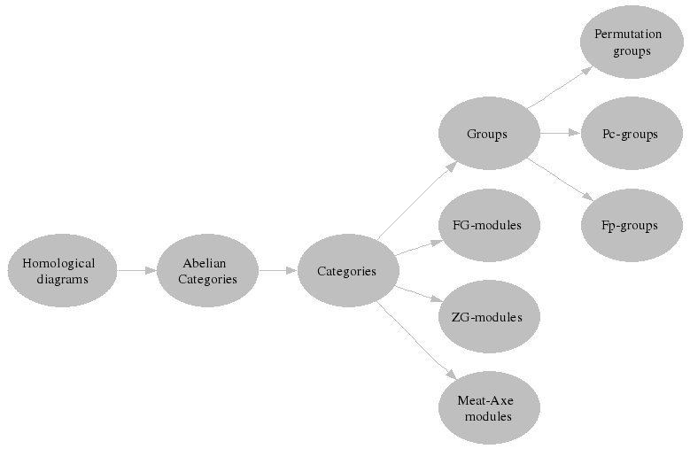

|
||||||||||||||||||
|---|---|---|---|---|---|---|---|---|---|---|---|---|---|---|---|---|---|---|
MotivationCategory Theory is a ubiquitous and well-tested framework for relating different algebraic theories. Some categories (such as Vector Spaces or ZG-Modules or Abelian groups) are abelian and thus admit all of the general constructions of homological algebra (such as chain complexs, mapping cones, spectral sequences and so forth). Other categories (such as Groups) are not abelian but do admit some important categorical properties (such as the existence of an initial object and a terminal object). In a given category some object may have special properties (such as being projective); some arrows may also have special properties (such as being normal or being an epimorphism). These special properties are relative to the category (e.g. a ZG-module may be projective in the category of Abelian Groups but not in the category of ZG-Modules). Different algebraic theories can be related via Functors (such as the forgetful functor from ZG-Modules to Abelian Groups, or the functorial equivalence between Crossed Modules and Cat-1-Groups). Functors can also be used to describe certain algebraic constructions (such as group cohomology). Functors are themselves arrows and can have properties (such as that of being an equivalence or an isomorphism). Some mathematical properties are actually properties of functors. (For example, "freeness" is a property of an adjoint pair of functors.)Although (small) categories are interesting algebraic structures in their own right, this page is interested in Category Theory as a language for moving objects between algebraic structures and as a language for implementing general algorithms/constructions in such a way that they can be applied in a range of different algebraic situations. We need to distinguish between algebraic properties (such as "the group A is an abelian group") and categorical properties (such as "the group A is an object in the category of abelian groups"). If we have a method that works for all permutation groups, then it also works for all abelian permutation groups. However, if we have an implementation of a construction that works for all permutation groups in the category of groups, it does not follow that it works correctly for permutation groups in the category of abelian groups. For instance, coproducts are different in these two categories. We are aiming at a hierarchical tree in which any function in a higher setting can be applied (indirectly) to all lower settings in the tree. A piece of the tree is as follows. 
|
||||||||||||||||||
ImplementationWe introduce Eilenberg and Mac Lane's notion into GAP using the following table. We choose our terminology so that it is consistent with the standard mathematical notion of "category" yet does not clash with GAP's existing use of the word "category".
We plan to implement general homological constructions such as "total complex of a multi-complex" using a small and portable language. This language will apply to "diagrams in a category" enabling one, for example, to transform a multi-complex into its total chain complex. A "diagram" will be a function D with an indexing set S and category C; for each s in S the function will yield an arrow D(s) in C. The following HAP session is a start in this direction. |
||||||||||||||||||
| gap>
#This session illustrates a start on the category theory approach for
CHA. gap> G:=Group((1,2),(4,5),(6,7,8));; gap> phi:=GroupHomomorphismByImages(G,G, > [(1,2),(4,5),(6,7,8)],[(4,5),(1,2),(7,8,6)]);; gap> CG:=CategoricalEnrichment(G,Category_Of_Groups);; gap> PHI:=CategoricalEnrichment(phi,Category_Of_Groups);; gap> #So CG is an object in the category of groups and PHI is gap> #an arrow in the category of groups. gap> #The idea is that in ANY category the following general gap> #notation should work. (There is currently no implementation of gap> # "pull-back", "push-out", "terminal object" etc. etc.) gap> PHI*PHI=PHI; false gap> PHI+PHI-PHI=PHI; true gap> (PHI + PHI)*PHI = (PHI*PHI) + (PHI+PHI); false gap> (PHI + PHI)*PHI = (PHI*PHI) + (PHI*PHI); true gap> #The last line is essentially a commutative diagram. The gap> #line before it is a diagram which does not commute. gap> #Suppose that we need to know if PHI belongs to a category gap> #in which there is an initial object. gap> HasInitialObject(CategoryName(PHI)); true gap> #Suppose we need to know if some power of the endomorphism PHI gap> #is equal to the identity gap> PHI=IdentityArrow(Source(PHI)); false gap> PHI*PHI=IdentityArrow(Source(PHI)); true gap> #Suppose we want to know if THETA*PHI is the trivial arrow, gap> #where THETA is defined as follows gap> Q:=Group((6,7,8));; gap> theta:=GroupHomomorphismByImages(G,Q,[(1,2),(4,5),(6,7,8)], > [(), (), (6,7,8)]);; gap> THETA:=CategoricalEnrichment(theta,Category_Of_Groups);; gap> #To test if THETA*PHI is trivial we do the following. gap> THETA*PHI=InitialArrow(Target(THETA))*TerminalArrow(Source(PHI)); false gap> #Suppose we want to access the source of PHI as a group. gap> #This won't give categorical information but it will gap> #yield algebraic properties such as its order. The command "Order" gap> #won't be in the categorical programming language. gap> Object(Source(PHI)); Group([ (1,2), (4,5), (6,7,8) ]) gap> Order(Object(Source(PHI))); 12 |
||||||||||||||||||
|